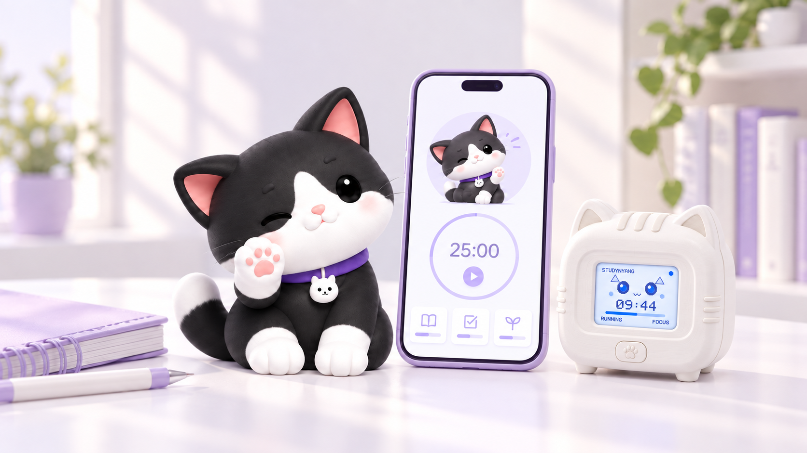
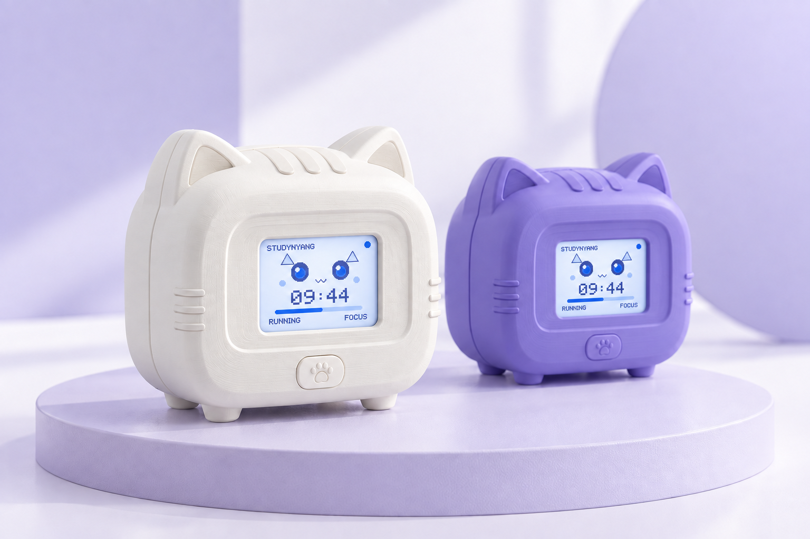
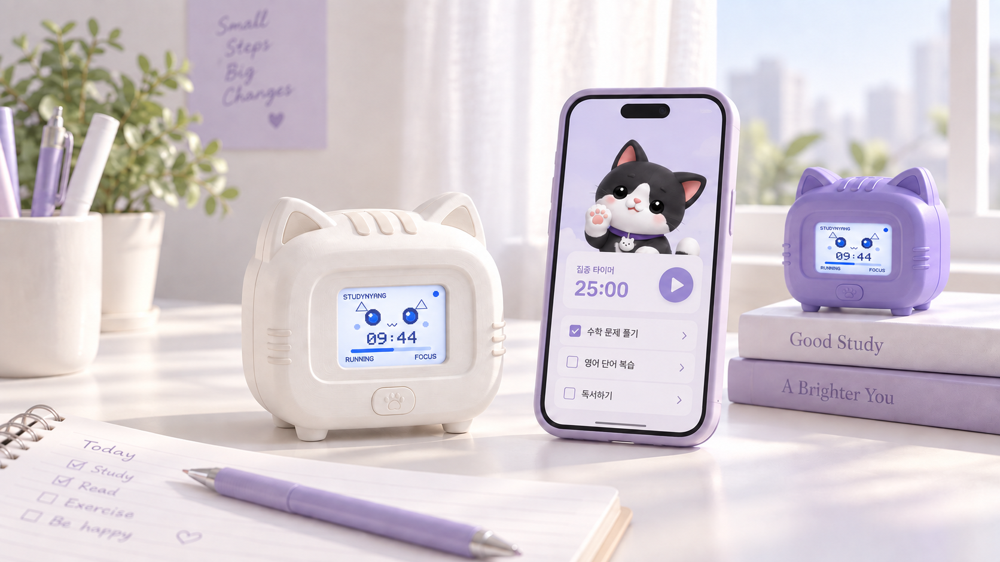
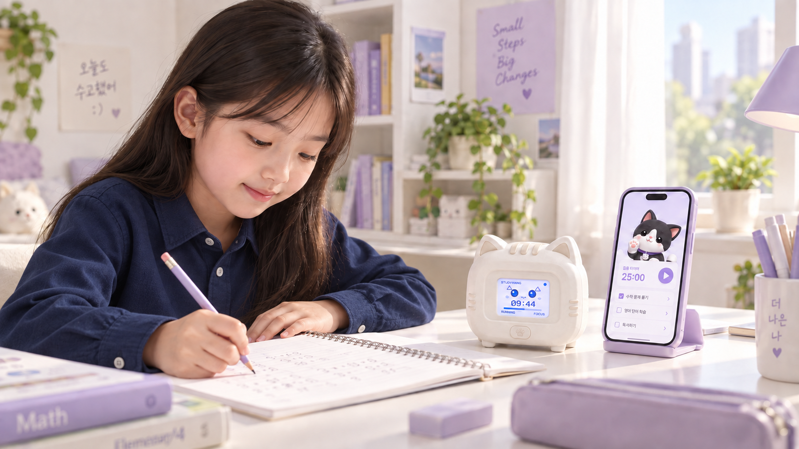

차곡차곡 쌓이는 공부 기록
집중한 시간과 학습 습관을
한눈에 살펴보세요.
손에 닿는 기기, 앱 속 냥냥이, 함께 보는 공부 기록.
화면 안팎으로 이어지는 스터디냥이
매일의 작은 집중을 응원해요.

집중한 시간과 학습 습관을
한눈에 살펴보세요.
매일의 작은 성취를 발견하고
따뜻한 응원을 건네요.
공부하다 잠깐 쉬고 싶을 때,
냥냥이와 이야기를 나눠요.
많이 해내야 한다는 부담 대신, 오늘 해낸 한 가지에 집중해요.
냥냥이와 쌓은 시간이 나만의 공부 습관이 되어갑니다.
짧은 몰입도 소중한 기록으로.
결과보다 꾸준히 해낸 과정을 봐요.
내일도 돌아오고 싶은 작은 이유.
이해를 돕기 위한 예시 학습 기록입니다.
공부할 과목과 숙제, 시험 일정을 정리해요. 작은 목표부터 시작하면 충분해요.
집중할 땐 조용히 곁을 지키고, 쉬어갈 땐 다정하게 알려주는 친구와 함께해요.
완료한 계획과 집중 시간이 기록으로 쌓여요. 잘 맞는 공부 리듬을 천천히 찾아가요.
고양이 귀를 닮은 몸체부터 손끝에 닿는 발바닥 버튼까지.
책상 위에 두고 매일 마주하는 스터디냥의 모습을 만나보세요.

둥근 사각 몸체와 고양이 귀. 공부 공간에 자연스럽게 어울리는 작은 동반자예요.
작은 화면에 시간과 표정을 담아, 지금의 공부 흐름을 가까이에서 보여줘요.
앞면의 발바닥 버튼으로 기기와 직접 만나는 경험을 만들어요.
스마트폰의 계획과 기록을 표정, 소리, 알림으로 이어주는
스터디냥 Physical AI 컴패니언을 소개해요.

시작, 집중, 달성, 휴식.
순간에 어울리는 표정으로 함께해요.
스마트폰에 담은 계획이
책상 위의 다정한 알림으로 이어져요.
해낸 날에도, 조금 어려운 날에도
다음 한 걸음을 응원해요.
현재 이 웹사이트에서는 예시 데이터와 캐릭터 인터랙션을 체험할 수 있어요. 실제 로봇·앱 연동은 제공하지 않습니다.
부모님은 대시보드에서 아이의 학습 시간과 목표, 꾸준함을 함께 살펴봐요. 작은 변화를 발견하고 아이만의 속도를 응원해 주세요.
학부모 대시보드 둘러보기 ↗
완벽한 계획이 없어도 괜찮아요. 함께 시작하면 되니까요.
안냥! 궁금한 게 있나요? 🐾
제품과 오픈 소식을 알려드릴게요.